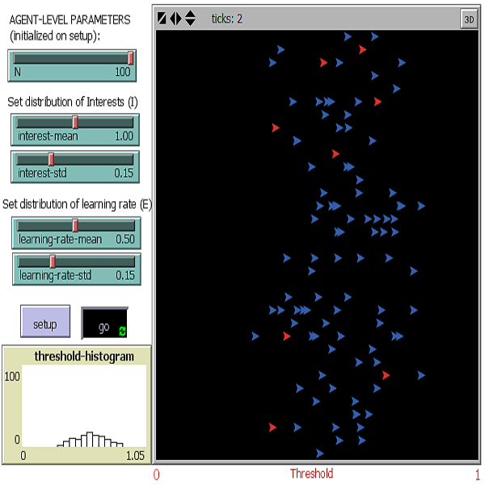
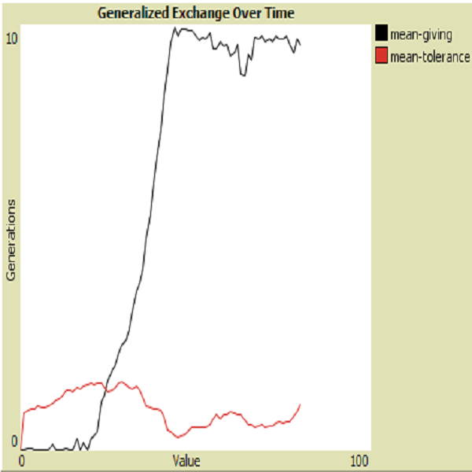
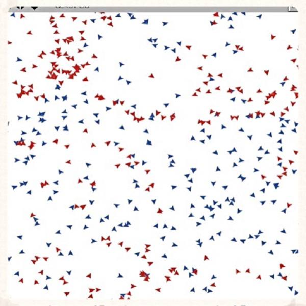
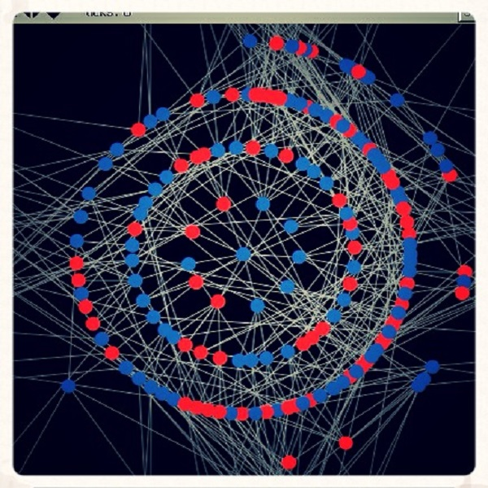

Diego F. Leal
Ph.D. Candidate in Sociology at UMass - Amherst
Department of Sociology
University of Massachusetts - Amherst
200 Hicks Way,
Thompson Hall, Office 812
Amherst, MA, 01003
dleal [at] umass [dot] edu

| ABOUT | PUBLICATIONS | MODELS | ESPAÑOL | NEWS | REPOSITORY |
Please feel free to request the source code of any of the models below. These computational models include my own published work and replications of prominent sociological papers. Importantly, they are also interactive teaching tools
to explore sociological theories, social processes, and emergent phenomena.

I developed the code for the inter-organizational application of the agent-based model in my 2016 PLoS ONE paper. [data and code][see article]

My replication of DiMaggio and Garip (2011). This is an agent-based diffusion model on intergroup inequality via homophily and network externalities.

My replication of Kitts (2006). This is an agent-based model on the emergence of antisocial norms via rival incentives and the effectiveness of peer influence.

My replication of Hanneman, Collins and Mordt (1995). This is a system-level model on state legitimacy and imperialist capitalism.

My replication of Macy (1991). This is a network critical mass agent-based model of collective action based on adaptive thresholds and stochastic learning.

My replication of Takahashi (2000). This is an agent-based model on the emergence of generalized exchange simulated through an evolutionary approach.

My replication of Munz, Hudea, Imad and Smith (2009). This is a model on the transmission of an infectious disease in a human population.

Scale-free network generated in NetLogo, based on the Barabási–Albert generative model. This is part of my work on network reciprocity with James Kitts.